降低開始使用的門檻
多數工具不需要安裝帳號或後端服務，開啟網頁就能操作，適合教室、臨時工作站與跨平台使用。
Four fields
首頁負責提供完整地圖；每個分類頁再說明工具差異、適用情境與使用限制，讓第一次來的人不必猜每個名稱代表什麼。
座位與課表編排、課堂互動、共識投票、作品展覽、瀏覽器工作台，以及用 AI 製作 Scratch 互動作品。
深入了解教學工具 →從螢幕錄影、音樂視覺化到 YouTube Shorts 嵌入，讓素材在瀏覽器裡完成擷取、轉換與輸出。
深入了解創作工具 →用可理解的指標檢查瀏覽器與硬體效能，整理唯讀優先的資料救援方法，並以開源工具包讓 AI 安全協助校園網路維運。
深入了解系統工具 →把 WebGL、即時音效與互動設計做成可玩的作品，同時留下 AI 工具操作與方案判讀文章。
深入了解實驗內容 →Workflow
每個專案都走同一條路：先把現場的麻煩看清楚，再用瀏覽器做出最小可用版本，經過實際使用修正後公開分享。
從教室、行政與創作現場的重複工作出發，先定義「哪一步最花時間、最容易出錯」。
$ observe --where=classroom優先用瀏覽器原生能力完成：不需安裝、不需帳號，打開網址就能試用。
$ build --no-backend --local-first在真實情境裡使用、收集回饋，把多餘的步驟拿掉，把容易誤觸的操作加上確認。
$ test --real-users --iterate整理成公開頁面與說明，讓其他老師與使用者也能直接拿去用。
$ deploy --public --freeDesign principles
專案規模與用途不同，但都盡量遵守三個原則。
多數工具不需要安裝帳號或後端服務，開啟網頁就能操作，適合教室、臨時工作站與跨平台使用。
錄影、編排、編輯與測試盡量使用瀏覽器能力完成，減少資料離開裝置的必要性。
功能以真實場景為起點；動畫、3D 與自動化不是裝飾，而是用來縮短操作或提升理解。
Full directory
每張卡片都是工具的真實畫面；滑鼠移上去會自動捲動預覽，點擊直接開啟。想先比較，請由分類頁進一步閱讀。
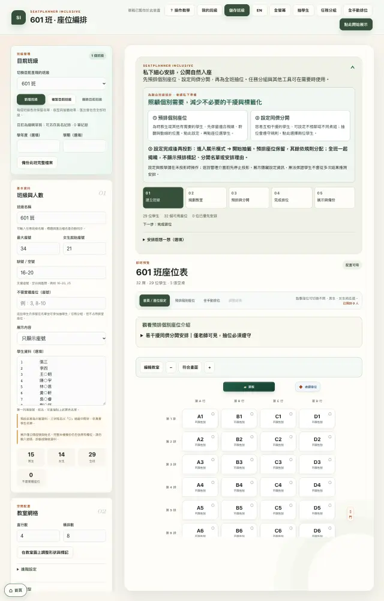
教學現場Classroom Seat Master班級座位配置、規則安排、展示與本機備份。 統計載入中開啟工具 ↗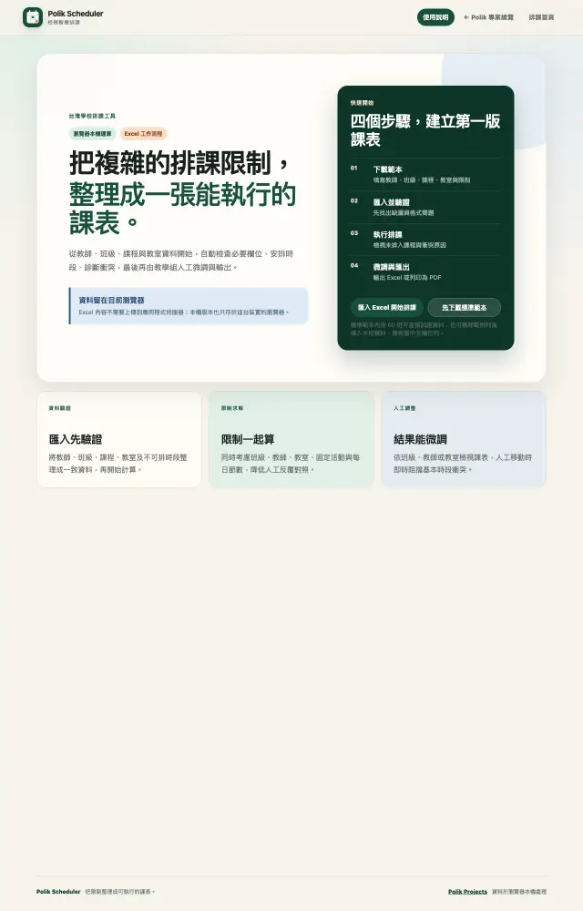
教學現場Polik Scheduler從 Excel 匯入教師、班級、課程與限制，在瀏覽器完成智慧排課、衝突診斷與人工微調。 統計載入中開始智慧排課 ↗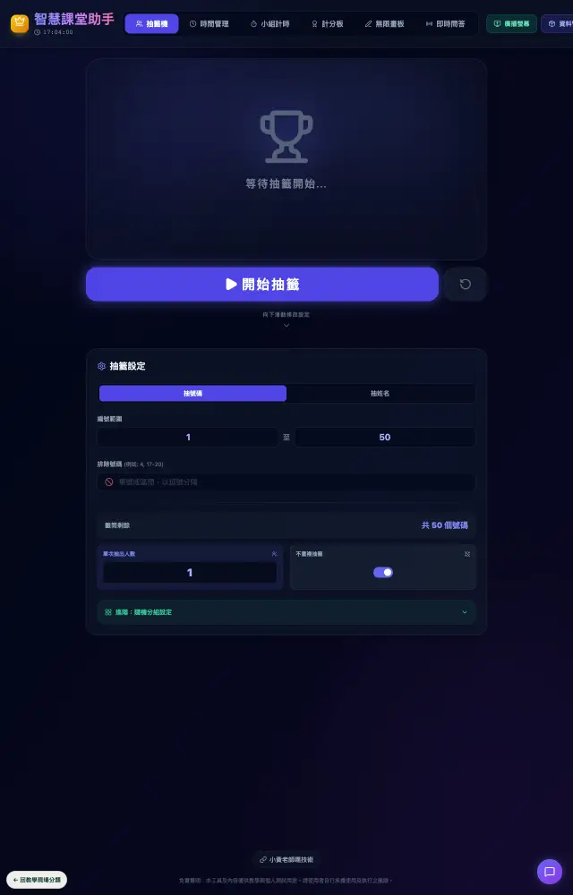
教學現場智慧課堂助手抽籤、分組、計時、計分、考場資訊與課堂互動。 統計載入中開啟工具 ↗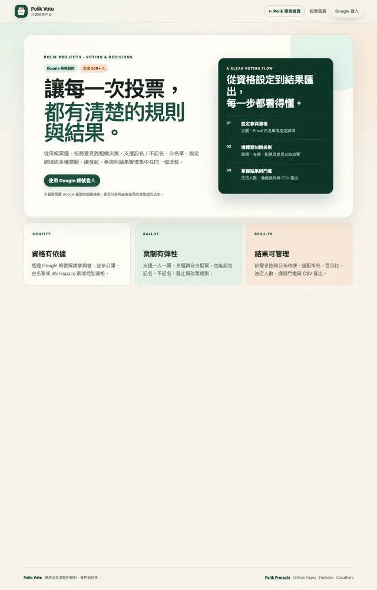
教學現場Polik VoteGoogle 帳號登入的線上投票與表決，支援記名／不記名、白名單與多種票制。 統計載入中開始投票 ↗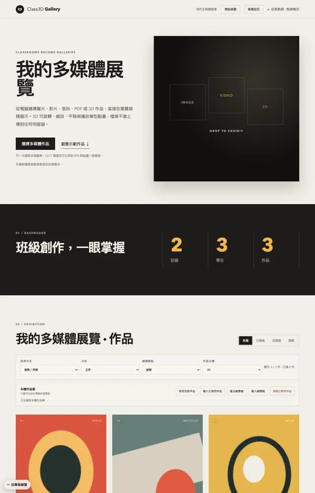
教學現場Class3D Gallery把班級作品放進互動式 3D 展場，提供展示模式與作品分享。 統計載入中進入作品展 ↗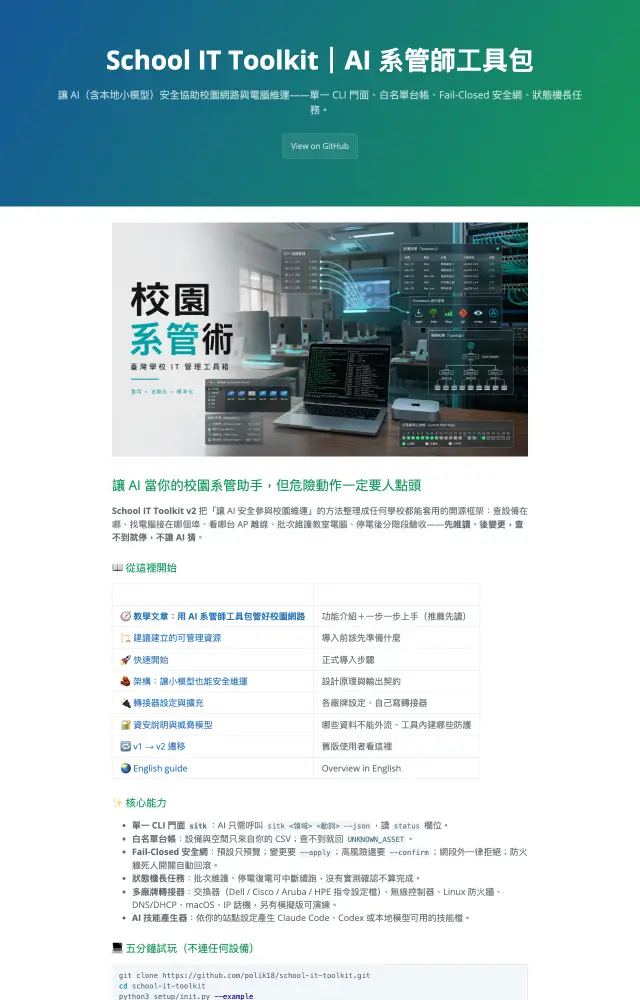
系統診斷School IT Toolkit｜AI 系管師讓 AI（含本地小模型）安全協助校園網路與電腦維運的開源框架：先唯讀、後變更，查不到就停。 統計載入中閱讀工具包 ↗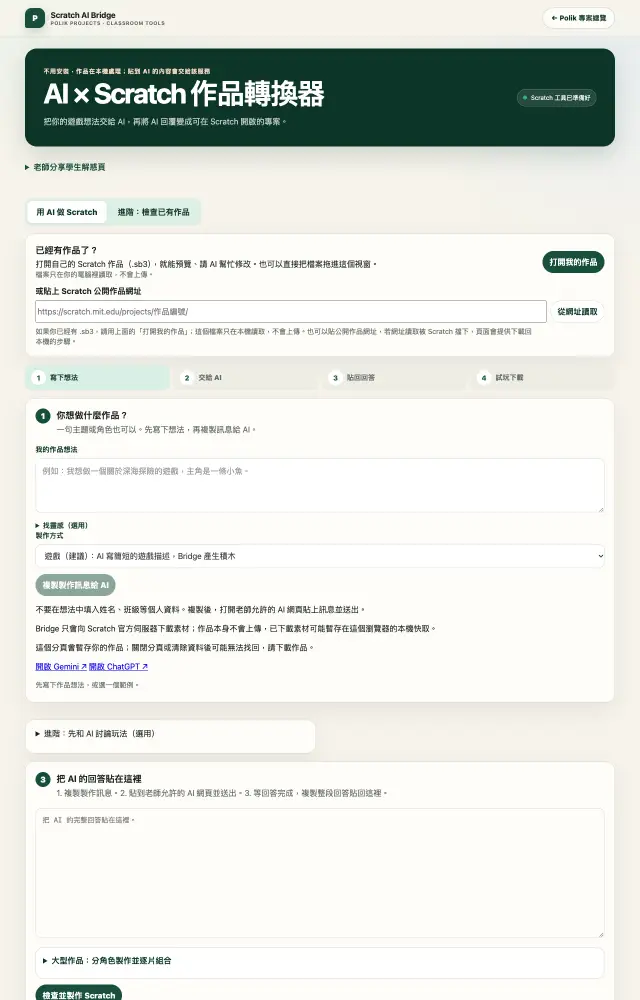
教學現場Scratch AI Bridge用中文描述遊戲想法，交給 AI 產生程式，再轉成可在 Scratch 開啟的作品。用 AI 製作 Scratch ↗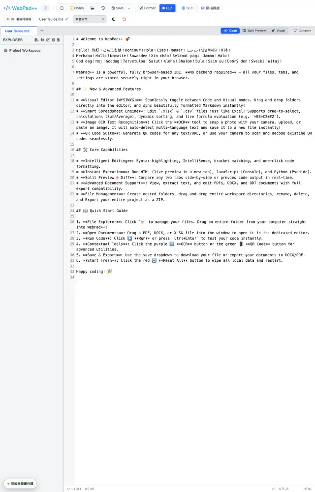
教學現場WebPad++程式、文件、OCR、QR Code 與 SEO 的瀏覽器工作台。 統計載入中開啟工具 ↗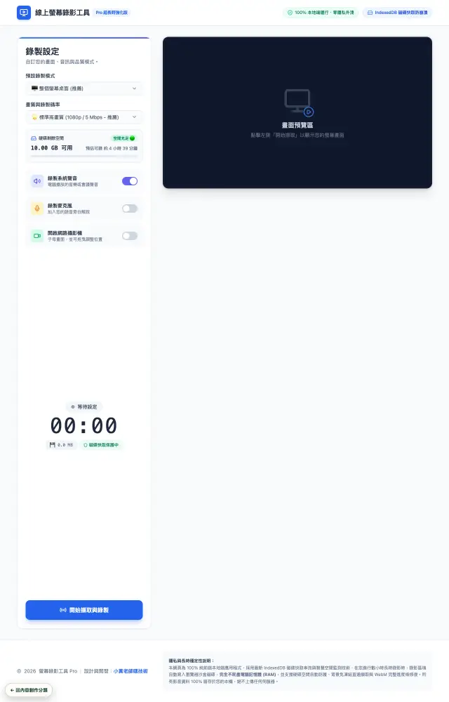
內容創作Screenrecorder Pro本機螢幕擷取、雙軌混音與可拖曳攝影機子母畫面。 統計載入中開啟工具 ↗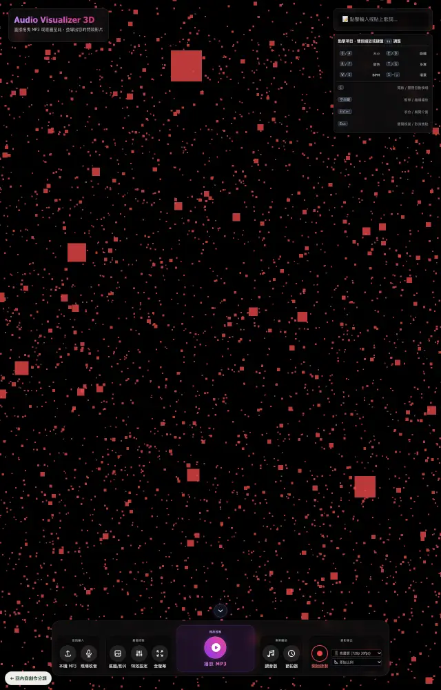
內容創作Audio Visualizer 3D音訊驅動的 3D 視覺效果與 MP4 輸出。 統計載入中開啟工具 ↗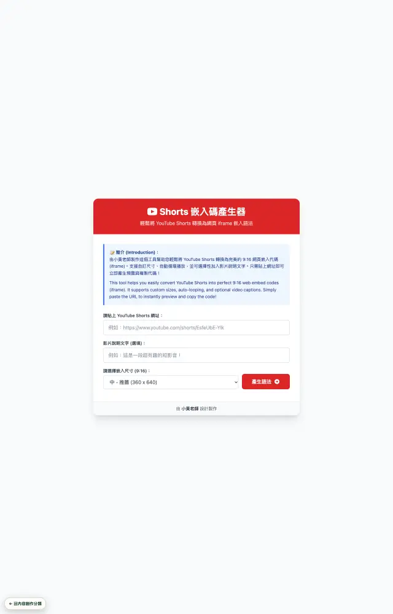
內容創作YouTube Shorts Embed把 Shorts 網址快速轉成可調整的直式嵌入碼。 統計載入中開啟工具 ↗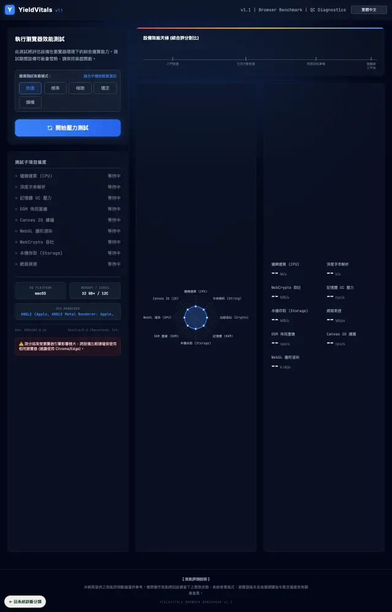
系統診斷YieldVitalsCPU、GPU、記憶體、儲存與網路的八軸瀏覽器評測。 統計載入中開啟工具 ↗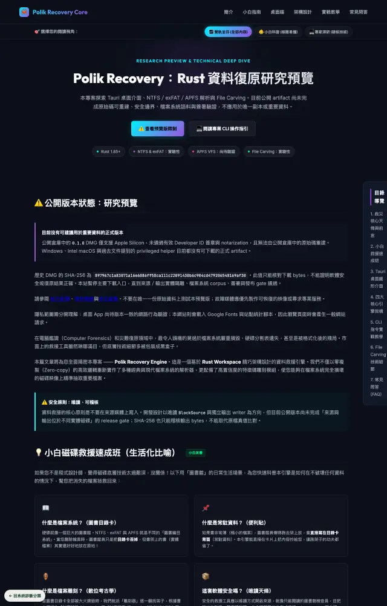
系統診斷Polik Recovery唯讀優先的磁碟救援架構、操作教學與桌面程式入口。 統計載入中查看專案 ↗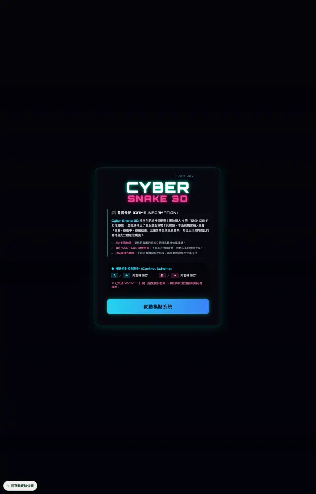
互動實驗Cyber Snake 3D結合 WebGL、動態運鏡與即時合成音效的互動遊戲。 統計載入中開始遊戲 ↗